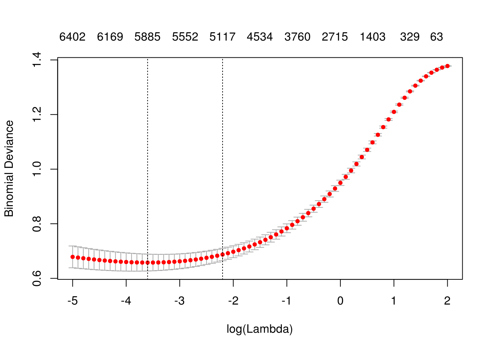

Sección 6 Diagnóstico y mejora de modelos
6.1 Aspectos generales
Al comenzar un proyecto de machine learning, las primeras consideraciones deben ser:
Establecer métricas de error apropiadas para el problema, y cuál es el máximo valor de este error requerido para nuestra aplicación.
- Construir un pipeline lo antes posible que vaya de datos hasta medición de calidad de los modelos. Este pipeline deberá, al menos, incluir cálculos de entradas, medición de desempeño de los modelos y cálculos de otros diagnósticos (como error de entrenamiento, convergencia de algoritmos, etc.)
En general, es difícil preveer exactamente qué va a funcionar para un problema particular, y los diagnósticos que veremos requieren de haber ajustado modelos. Nuestra primera recomendación para ir hacia un modelo de mejor desempeño es:
Es mejor y más rápido comenzar rápido, aún con un modelo simple, con entradas {} (no muy refinadas), y con los datos que tenemos a mano. De esta forma podemos aprender más rápido. Demasiado tiempo pensando, discutiendo, o diseñando qué algoritmo deberíamos usar, cómo deberíamos construir las entradas, etc. es muchas veces tiempo perdido.
Con el pipeline establecido, si el resultado no es satisfactorio, entonces tenemos que tomar decisiones para mejorar.
6.2 ¿Qué hacer cuando el desempeño no es satisfactorio?
Supongamos que tenemos un clasificador construido con regresión logística regularizada, y que cuando lo aplicamos a nuestra muestra de prueba el desempeño es malo. ¿Qué hacer?
Algunas opciones:
- Conseguir más datos de entrenamiento.
- Reducir el número de entradas por algún método (eliminación manual, componentes principales, etc.)
- Construir más entradas utilizando distintos enfoques o fuentes de datos.
- Incluir variables derivadas adicionales e interacciones.
- Intentar construir una red neuronal para predecir (otro método).
- Aumentar la regularización.
- Disminuir la regularización.
- Correr más tiempo el algoritmo de ajuste.
¿Con cuál empezar? Cada una de estas estrategias intenta arreglar distintos problemas. En lugar de intentar al azar distintas cosas, que consumen tiempo y dinero y no necesariamente nos van a llevar a mejoras, a continuación veremos diagnósticos y recetas que nos sugieren la mejor manera de usar nuestro tiempo para mejorar nuestros modelos.
Usaremos el siguiente ejemplo para ilustrar los conceptos:
Ejemplo
Nos interesa hacer una predicción de polaridad de críticas o comentarios de pelíıculas: buscamos clasificar una reseña como positiva o negativa dependiendo de su contenido. Tenemos dos grupos de reseñas separadas en positivas y negativas (estos datos fueron etiquetados por una persona).
Cada reseña está un archivo de texto, y tenemos 1000 de cada tipo:
negativos <- list.files('./datos/sentiment/neg', full.names = TRUE)
positivos <- list.files('./datos/sentiment/pos', full.names = TRUE)
head(negativos)## [1] "./datos/sentiment/neg/cv000_29416.txt"
## [2] "./datos/sentiment/neg/cv001_19502.txt"
## [3] "./datos/sentiment/neg/cv002_17424.txt"
## [4] "./datos/sentiment/neg/cv003_12683.txt"
## [5] "./datos/sentiment/neg/cv004_12641.txt"
## [6] "./datos/sentiment/neg/cv005_29357.txt"head(positivos)## [1] "./datos/sentiment/pos/cv000_29590.txt"
## [2] "./datos/sentiment/pos/cv001_18431.txt"
## [3] "./datos/sentiment/pos/cv002_15918.txt"
## [4] "./datos/sentiment/pos/cv003_11664.txt"
## [5] "./datos/sentiment/pos/cv004_11636.txt"
## [6] "./datos/sentiment/pos/cv005_29443.txt"length(negativos)## [1] 1000length(positivos)## [1] 1000read_file(negativos[1])[1] “plot : two teen couples go to a church party , drink and then drive . get into an accident . of the guys dies , but his girlfriend continues to see him in her life , and has nightmares . ’s the deal ? the movie and " sorta " find out . . . : a mind-fuck movie for the teen generation that touches on a very cool idea , but presents it in a very bad package . is what makes this review an even harder one to write , since i generally applaud films which attempt to break the mold , mess with your head and such ( lost highway & memento ) , but there are good and bad ways of making all types of films , and these folks just didn’t snag this one correctly . seem to have taken this pretty neat concept , but executed it terribly . what are the problems with the movie ? , its main problem is that it’s simply too jumbled . starts off " normal " but then downshifts into this " fantasy " world in which you , as an audience member , have no idea what’s going on . are dreams , there are characters coming back from the dead , there are others who look like the dead , there are strange apparitions , there are disappearances , there are a looooot of chase scenes , there are tons of weird things that happen , and most of it is simply not explained . i personally don’t mind trying to unravel a film every now and then , but when all it does is give me the same clue over and over again , i get kind of fed up after a while , which is this film’s biggest problem . ’s obviously got this big secret to hide , but it seems to want to hide it completely until its final five minutes . do they make things entertaining , thrilling or even engaging , in the meantime ? really . sad part is that the arrow and i both dig on flicks like this , so we actually figured most of it out by the half-way point , so all of the strangeness after that did start to make a little bit of sense , but it still didn’t the make the film all that more entertaining . guess the bottom line with movies like this is that you should always make sure that the audience is " into it " even before they are given the secret password to enter your world of understanding . mean , showing melissa sagemiller running away from visions for about 20 minutes throughout the movie is just plain lazy ! ! , we get it . . . there people chasing her and we don’t know who they are . we really need to see it over and over again ? about giving us different scenes offering further insight into all of the strangeness going down in the movie ? , the studio took this film away from its director and chopped it up themselves , and it shows . might’ve been a pretty decent teen mind-fuck movie in here somewhere , but i guess " the suits " decided that turning it into a music video with little edge , would make more sense . actors are pretty good for the most part , although wes bentley just seemed to be playing the exact same character that he did in american beauty , only in a new neighborhood . my biggest kudos go out to sagemiller , who holds her own throughout the entire film , and actually has you feeling her character’s unraveling . , the film doesn’t stick because it doesn’t entertain , it’s confusing , it rarely excites and it feels pretty redundant for most of its runtime , despite a pretty cool ending and explanation to all of the craziness that came before it . , and by the way , this is not a horror or teen slasher flick . . . it’s packaged to look that way because someone is apparently assuming that the genre is still hot with the kids . also wrapped production two years ago and has been sitting on the shelves ever since . . . . skip ! ’s joblo coming from ? nightmare of elm street 3 ( 7/10 ) - blair witch 2 ( 7/10 ) - the crow ( 9/10 ) - the crow : salvation ( 4/10 ) - lost highway ( 10/10 ) - memento ( 10/10 ) - the others ( 9/10 ) - stir of echoes ( 8/10 ) ”
read_file(positivos[1])[1] “films adapted from comic books have had plenty of success , whether they’re about superheroes ( batman , superman , spawn ) , or geared toward kids ( casper ) or the arthouse crowd ( ghost world ) , but there’s never really been a comic book like from hell before . starters , it was created by alan moore ( and eddie campbell ) , who brought the medium to a whole new level in the mid ‘80s with a 12-part series called the watchmen . say moore and campbell thoroughly researched the subject of jack the ripper would be like saying michael jackson is starting to look a little odd . book ( or " graphic novel , " if you will ) is over 500 pages long and includes nearly 30 more that consist of nothing but footnotes . other words , don’t dismiss this film because of its source . you can get past the whole comic book thing , you might find another stumbling block in from hell’s directors , albert and allen hughes . the hughes brothers to direct this seems almost as ludicrous as casting carrot top in , well , anything , but riddle me this : who better to direct a film that’s set in the ghetto and features really violent street crime than the mad geniuses behind menace ii society ? ghetto in question is , of course , whitechapel in 1888 london’s east end . ’s a filthy , sooty place where the whores ( called " unfortunates " ) are starting to get a little nervous about this mysterious psychopath who has been carving through their profession with surgical precision . the first stiff turns up , copper peter godley ( robbie coltrane , the world is not enough ) calls in inspector frederick abberline ( johnny depp , blow ) to crack the case . , a widower , has prophetic dreams he unsuccessfully tries to quell with copious amounts of absinthe and opium . arriving in whitechapel , he befriends an unfortunate named mary kelly ( heather graham , say it isn’t so ) and proceeds to investigate the horribly gruesome crimes that even the police surgeon can’t stomach . don’t think anyone needs to be briefed on jack the ripper , so i won’t go into the particulars here , other than to say moore and campbell have a unique and interesting theory about both the identity of the killer and the reasons he chooses to slay . the comic , they don’t bother cloaking the identity of the ripper , but screenwriters terry hayes ( vertical limit ) and rafael yglesias ( les mis ? rables ) do a good job of keeping him hidden from viewers until the very end . ’s funny to watch the locals blindly point the finger of blame at jews and indians because , after all , an englishman could never be capable of committing such ghastly acts . from hell’s ending had me whistling the stonecutters song from the simpsons for days ( " who holds back the electric car/who made steve guttenberg a star ? " ) . ’t worry - it’ll all make sense when you see it . onto from hell’s appearance : it’s certainly dark and bleak enough , and it’s surprising to see how much more it looks like a tim burton film than planet of the apes did ( at times , it seems like sleepy hollow 2 ) . print i saw wasn’t completely finished ( both color and music had not been finalized , so no comments about marilyn manson ) , but cinematographer peter deming ( don’t say a word ) ably captures the dreariness of victorian-era london and helped make the flashy killing scenes remind me of the crazy flashbacks in twin peaks , even though the violence in the film pales in comparison to that in the black-and-white comic . winner martin childs’ ( shakespeare in love ) production design turns the original prague surroundings into one creepy place . the acting in from hell is solid , with the dreamy depp turning in a typically strong performance and deftly handling a british accent . holm ( joe gould’s secret ) and richardson ( 102 dalmatians ) log in great supporting roles , but the big surprise here is graham . cringed the first time she opened her mouth , imagining her attempt at an irish accent , but it actually wasn’t half bad . film , however , is all good . 2 : 00 - r for strong violence/gore , sexuality , language and drug content ”
Consideremos primero la métrica de error, que depende de nuestra aplicación. En este caso, quisiéramos hacer dar una calificación a cada película basada en el % de reseñas positivas que tiene. Supongamos que se ha decidido que necesitamos al menos una tasa de correctos de 90% para que el score sea confiable (cómo calcularías algo así?).
Ahora necesitamos construir un pipeline para obtener las primeras predicciones. Tenemos que pensar qué entradas podríamos construir.
6.3 Pipeline de procesamiento
Empezamos por construir funciones para leer datos (ver script). Construimos un data frame:
source('./scripts/funciones_sentiment.R')
df <- prep_df('./datos/sentiment/') %>% unnest(texto)
nrow(df)[1] 2000
str_sub(df$texto[1], 1, 200)[1] “Review films adapted from comic books have had plenty of success , whether they’re about superheroes ( batman , superman , spawn ) , or geared toward kids ( casper ) or the arthouse crowd ( ghost wor”
Ahora separamos una muestra de prueba (y una de entrenamiento más chica para simular después el proceso de recoger más datos):
set.seed(94512)
df$muestra <- sample(c('entrena', 'prueba'), 2000, prob = c(0.8, 0.2),
replace = TRUE)
table(df$muestra)##
## entrena prueba
## 1575 425df_ent <- df %>% filter(muestra == 'entrena')
df_pr <- df %>% filter(muestra == 'prueba')
df_ent <- sample_n(df_ent, nrow(df_ent)) #permutamos al azar
df_ent_grande <- df_ent
df_ent <- df_ent %>% sample_n(700)Intentemos algo simple para empezar: consideramos qué palabras contiene cada reseña, e intentamos clasificar en base esas palabras. Así que en primer lugar dividimos cada texto en tokens (pueden ser palabras, o sucesiones de caracteres o de palabras de tamaño fijo (n-gramas), oraciones, etc.). En este caso, usamos el paquete tidytext. La función unnest_tokens elimina signos de puntuación, convierte todo a minúsculas, y separa las palabras:
Vamos a calcular los tokens y ordernarlos por frecuencia. Empezamos calculando nuestro vocabulario. Supongamos que usamos las 50 palabras más comunes, y usamos poca regularización:
vocabulario <- calc_vocabulario(df_ent, 50)
head(vocabulario)## # A tibble: 6 x 2
## palabra frec
## <chr> <int>
## 1 a 12904
## 2 about 1228
## 3 all 1464
## 4 an 2000
## 5 and 12173
## 6 are 2359tail(vocabulario)## # A tibble: 6 x 2
## palabra frec
## <chr> <int>
## 1 what 1006
## 2 when 1091
## 3 which 1153
## 4 who 1870
## 5 with 3705
## 6 you 1565- Todas las etapas de preprocesamiento deben hacerse en función de los datos de entrenamiento. En este ejemplo, podríamos cometer el error de usar todos los datos para calcular el vocabulario.
- Nuestras entradas aquí no se ven muy buenas: los términos más comunes son en su mayoría palabras sin significado, de modo que no esperamos un desempeño muy bueno. En este momento no nos preocupamos mucho por eso, queremos correr los primeros modelos.
library(glmnet)
mod_x <- correr_modelo(df_ent, df_pr, vocabulario, lambda = 1e-1)## [1] "Error entrenamiento: 0.31"
## [1] "Error prueba: 0.36"
## [1] "Devianza entrena:1.148"
## [1] "Devianza prueba:1.271"6.4 Diagnósticos: sesgo y varianza
Y notamos que
- El error de entrenamiento no es satisfactorio: está muy por arriba de nuestro objetivo (10%)
- Hay algo de brecha entre entrenamiento y prueba, de modo que disminuir varianza puede ayudar.
¿Qué hacer? Nuestro clasificador ni siquiera puede clasificar bien la muestra de entrenamiento, lo que implica que nuestro modelo tiene sesgo demasiado alto. Controlar la varianza no nos va a ayudar a resolver nuestro problema en este punto. Podemos intentar un modelo más flexible.
Para disminuir el sesgo podemos:
- Expander el vocabulario (agregar más entradas)
- Crear nuevas entradas a partir de los datos (más informativas)
- Usar un método más flexible (como redes neuronales)
- Regularizar menos
Cosas que no van a funcionar (puede bajar un poco el error de validación, pero el error de entrenamiento es muy alto):
- Conseguir más datos de entrenamiento (el error de entrenamiento va a subir, y el de validación va a quedar muy arriba, aunque disminuya)
- Regularizar más (misma razón)
- Usar un vocabulario más chico, eliminar entradas (misma razón)
Por ejemplo, si juntáramos más datos de entrenamiento (con el costo que esto implica), obtendríamos:
mod_x <- correr_modelo(df_ent_grande, df_pr, vocabulario, lambda = 1e-1)## [1] "Error entrenamiento: 0.31"
## [1] "Error prueba: 0.35"
## [1] "Devianza entrena:1.187"
## [1] "Devianza prueba:1.246"Vemos que aunque bajó ligeramente el error de prueba, el error es demasiado alto. Esta estrategia no funcionó con este modelo, y hubiéramos perdido tiempo y dinero (por duplicar el tamaño de muestra) sin obtener mejoras apreciables.
Observación: el error de entrenamiento subió. ¿Puedes explicar eso? Esto sucede porque típicamente el error para cada caso individual de la muestra original sube, pues la optimización se hace sobre más casos. Es más difícil ajustar los datos de entrenamiento cuando tenemos más datos.
En lugar de eso, podemos comenzar quitando regularización, por ejemplo
mod_x <- correr_modelo(df_ent, df_pr, vocabulario, lambda =1e-10)## [1] "Error entrenamiento: 0.29"
## [1] "Error prueba: 0.37"
## [1] "Devianza entrena:1.099"
## [1] "Devianza prueba:1.32"Y notamos que reducimos un poco el sesgo. Por el momento, seguiremos intentando reducir sesgo. Podemos ahora incluir más variables
vocabulario <- calc_vocabulario(df_ent, 3000)
mod_x <- correr_modelo(df_ent, df_pr, vocabulario, lambda=1e-10)## [1] "Error entrenamiento: 0"
## [1] "Error prueba: 0.38"
## [1] "Devianza entrena:0"
## [1] "Devianza prueba:7.66"El sesgo ya no parece ser un problema: Ahora tenemos un problema de varianza.
Podemos regularizar más:
mod_x <- correr_modelo(df_ent, df_pr, vocabulario, lambda=1e-5)## [1] "Error entrenamiento: 0"
## [1] "Error prueba: 0.2"
## [1] "Devianza entrena:0"
## [1] "Devianza prueba:1.387"mod_x <- correr_modelo(df_ent, df_pr, vocabulario, lambda=0.01)## [1] "Error entrenamiento: 0"
## [1] "Error prueba: 0.18"
## [1] "Devianza entrena:0.021"
## [1] "Devianza prueba:0.797"Y logramos reducir considerablemente el error y devianza de prueba.
6.5 Refinando el pipeline
El error de entrenamiento es satisfactorio todavía, y nos estamos acercando a nuestro objetivo (intenta regularizar más para verificar que el problema ahora es sesgo). En este punto, podemos intentar reducir varianza (reducir error de prueba con algún incremento en error de entrenamiento).
- Buscar más casos de entrenamiento: si son baratos, esto podría ayudar (aumentar al doble o 10 veces más).
- Redefinir entradas más informativas, para reducir el número de variables pero al mismo tiempo no aumentar el sesgo.
Intentaremos por el momento el segundo camino (reducción de varianza). Podemos intentar tres cosas:
- Eliminar los términos que son demasiado frecuentes (son palabras no informativas, como the, a, he, she, etc.). Esto podría reducir varianza sin afectar mucho el sesgo.
- Usar raíces de palabras en lugar de palabras (por ejemplo, transfomar defect, defects, defective -> defect y boring,bored, bore -> bore, etc.). De esta manera, controlamos la proliferación de entradas que indican lo mismo y aumentan varianza - y quizá el sesgo no aumente mucho.
- Intentar usar bigramas - esto reduce el sesgo, pero quizá la varianza no aumente mucho.
data("stop_words")
head(stop_words)## # A tibble: 6 x 2
## word lexicon
## <chr> <chr>
## 1 a SMART
## 2 a's SMART
## 3 able SMART
## 4 about SMART
## 5 above SMART
## 6 according SMARThead(calc_vocabulario(df_ent, 100))## # A tibble: 6 x 2
## palabra frec
## <chr> <int>
## 1 a 12904
## 2 about 1228
## 3 after 569
## 4 all 1464
## 5 also 704
## 6 an 2000head(calc_vocabulario(df_ent, 100, remove_stop = TRUE))## # A tibble: 6 x 2
## palabra frec
## <chr> <int>
## 1 2 179
## 2 acting 224
## 3 action 418
## 4 actor 165
## 5 actors 256
## 6 american 193vocabulario <- calc_vocabulario(df_ent, 2000, remove_stop = TRUE)
head(vocabulario %>% arrange(desc(frec)),20)## # A tibble: 20 x 2
## palabra frec
## <chr> <int>
## 1 film 2991
## 2 movie 1844
## 3 time 797
## 4 review 788
## 5 story 749
## 6 character 639
## 7 characters 631
## 8 life 527
## 9 films 515
## 10 plot 490
## 11 bad 484
## 12 people 484
## 13 scene 482
## 14 movies 455
## 15 scenes 443
## 16 action 418
## 17 director 413
## 18 love 393
## 19 real 329
## 20 world 323tail(vocabulario %>% arrange(desc(frec)),20)## # A tibble: 20 x 2
## palabra frec
## <chr> <int>
## 1 shock 18
## 2 sir 18
## 3 sleep 18
## 4 sole 18
## 5 spot 18
## 6 stays 18
## 7 stereotypical 18
## 8 strip 18
## 9 supergirl 18
## 10 taylor 18
## 11 threat 18
## 12 thrillers 18
## 13 tradition 18
## 14 tree 18
## 15 trial 18
## 16 trio 18
## 17 triumph 18
## 18 visit 18
## 19 warning 18
## 20 werewolf 18Este vocabulario parece que puede ser más útil. Vamos a tener que ajustar la regularización de nuevo (y también el número de entradas). Usaremos ahora validación cruzada para seleccionar modelos. Nota: este proceso también lo podemos hacer con cv.glmnet de manera más rápida.
mod_x <- correr_modelo_cv(df_ent, df_pr, vocabulario,
lambda = exp(seq(-10,5,0.1)))
saveRDS(mod_x, file = './cache_obj/mod_sentiment_1.rds')
describir_modelo_cv(mod_x)
## [1] "Lambda min: 0.201896517994655"
## [1] "Error entrenamiento: 0"
## [1] "Error prueba: 0.21"
## [1] "Devianza entrena:0.261"
## [1] "Devianza prueba:0.879"No estamos mejorando. Podemos intentar con un número diferente de entradas:
vocabulario <- calc_vocabulario(df_ent, 4000, remove_stop = TRUE)
mod_x <- correr_modelo_cv(df_ent, df_pr, vocabulario, lambda = exp(seq(-10,5,0.1)))
saveRDS(mod_x, file = './cache_obj/mod_sentiment_2.rds')
describir_modelo_cv(mod_x)
## [1] "Lambda min: 0.49658530379141"
## [1] "Error entrenamiento: 0"
## [1] "Error prueba: 0.18"
## [1] "Devianza entrena:0.295"
## [1] "Devianza prueba:0.883"Y parece que nuestra estrategia no está funcionando muy bien. Regresamos a nuestro modelo con ridge
vocabulario <- calc_vocabulario(df_ent, 3000, remove_stop = FALSE)
mod_x <- correr_modelo_cv(df_ent, df_pr, vocabulario, lambda = exp(seq(-5,2,0.1)))
saveRDS(mod_x, file = './cache_obj/mod_sentiment_3.rds')
describir_modelo_cv(mod_x)
## [1] "Lambda min: 0.110803158362334"
## [1] "Error entrenamiento: 0"
## [1] "Error prueba: 0.18"
## [1] "Devianza entrena:0.128"
## [1] "Devianza prueba:0.775"Podemos intentar aumentar el número de palabras y aumentar también la regularización
vocabulario <- calc_vocabulario(df_ent, 4000, remove_stop = FALSE)
mod_x <- correr_modelo_cv(df_ent, df_pr, vocabulario, lambda = exp(seq(-5,2,0.1)))
saveRDS(mod_x, file = './cache_obj/mod_sentiment_4.rds')
describir_modelo_cv(mod_x)
## [1] "Lambda min: 0.22313016014843"
## [1] "Error entrenamiento: 0"
## [1] "Error prueba: 0.16"
## [1] "Devianza entrena:0.173"
## [1] "Devianza prueba:0.776"6.6 Consiguiendo más datos
Como nuestro principal problema es varianza, podemos mejorar buscando más datos. Supongamos que hacemos eso en este caso, conseguimos el doble casos de entrenamiento. En este ejemplo, podríamos etiquetar más reviews: esto es relativamente barato y rápido
vocabulario <- calc_vocabulario(df_ent_grande, 3000, remove_stop = FALSE)
mod_x <- correr_modelo_cv(df_ent_grande, df_pr, vocabulario, lambda = exp(seq(-5,2,0.1)))## Joining, by = "palabra"
## Joining, by = "palabra"## Warning: Trying to compute distinct() for variables not found in the data:
## - `row_col`, `column_col`
## This is an error, but only a warning is raised for compatibility reasons.
## The operation will return the input unchanged.
## Warning: Trying to compute distinct() for variables not found in the data:
## - `row_col`, `column_col`
## This is an error, but only a warning is raised for compatibility reasons.
## The operation will return the input unchanged.saveRDS(mod_x, file = './cache_obj/mod_sentiment_5.rds')
describir_modelo_cv(mod_x)
## [1] "Lambda min: 0.0907179532894125"
## [1] "Error entrenamiento: 0"
## [1] "Error prueba: 0.12"
## [1] "Devianza entrena:0.18"
## [1] "Devianza prueba:0.653"Y ya casi logramos nuestro objetivo. Podemos intentar con más palabras
vocabulario <- calc_vocabulario(df_ent_grande, 4000, remove_stop = FALSE)
mod_x <- correr_modelo_cv(df_ent_grande, df_pr, vocabulario, lambda = exp(seq(-5,2,0.1)))## Joining, by = "palabra"
## Joining, by = "palabra"## Warning: Trying to compute distinct() for variables not found in the data:
## - `row_col`, `column_col`
## This is an error, but only a warning is raised for compatibility reasons.
## The operation will return the input unchanged.
## Warning: Trying to compute distinct() for variables not found in the data:
## - `row_col`, `column_col`
## This is an error, but only a warning is raised for compatibility reasons.
## The operation will return the input unchanged.saveRDS(mod_x, file = './cache_obj/mod_sentiment_6.rds')
mod_x <- readRDS('./cache_obj/mod_sentiment_6.rds')
describir_modelo_cv(mod_x)
## [1] "Lambda min: 0.0742735782143339"
## [1] "Error entrenamiento: 0"
## [1] "Error prueba: 0.12"
## [1] "Devianza entrena:0.127"
## [1] "Devianza prueba:0.621"Y esto funcionó bien. Subir más la regularización no ayuda mucho (pruébalo). Parece que el sesgo lo podemos hacer chico (reducir el error de entrenamiento considerablemente), pero tenemos un problema más grande con la varianza.
- Quizá muchas palabras que estamos usando no tienen qué ver con la calidad de positivo/negativo, y eso induce varianza.
- Estos modelos no utilizan la estructura que hay en las reseñas, simplemente cuentan qué palabras aparecen. Quizá aprovechar esta estructura podemos incluir variables más informativas que induzcan menos varianza sin aumentar el sesgo.
- Podemos conseguir más datos.
Obsérvese que:
- ¿Podríamos intentar con una red neuronal totalmente conexa? Probablemente esto no va a ayudar, pues es un modelo más complejo y nuestro problema es varianza.
6.7 Usar datos adicionales
Intentemos el primer camino. Probamos usar palabras que tengan afinidad como parte de su significado (positivas y negativas). Estos datos están incluidos en el paquete tidytext.
bing <- filter(sentiments, lexicon == 'bing')
tail(bing)## # A tibble: 6 x 4
## word sentiment lexicon score
## <chr> <chr> <chr> <int>
## 1 zealous negative bing NA
## 2 zealously negative bing NA
## 3 zenith positive bing NA
## 4 zest positive bing NA
## 5 zippy positive bing NA
## 6 zombie negative bing NAdim(vocabulario)## [1] 4106 2vocabulario <- calc_vocabulario(df_ent_grande, 8000, remove_stop = FALSE)
voc_bing <- vocabulario %>% inner_join(bing %>% rename(palabra = word))## Joining, by = "palabra"dim(voc_bing)## [1] 1476 5mod_x <- correr_modelo_cv(df_ent_grande, df_pr, voc_bing, alpha=0,
lambda = exp(seq(-5,2,0.1)))## Joining, by = "palabra"
## Joining, by = "palabra"## Warning: Trying to compute distinct() for variables not found in the data:
## - `row_col`, `column_col`
## This is an error, but only a warning is raised for compatibility reasons.
## The operation will return the input unchanged.
## Warning: Trying to compute distinct() for variables not found in the data:
## - `row_col`, `column_col`
## This is an error, but only a warning is raised for compatibility reasons.
## The operation will return the input unchanged.describir_modelo_cv(mod_x)
## [1] "Lambda min: 0.135335283236613"
## [1] "Error entrenamiento: 0.02"
## [1] "Error prueba: 0.18"
## [1] "Devianza entrena:0.399"
## [1] "Devianza prueba:0.775"Estas variables solas no dan un resultado tan bueno (tenemos tanto sesgo como varianza altas). Podemos combinar:
vocabulario <- calc_vocabulario(df_ent_grande, 3000, remove_stop =FALSE)
voc <- bind_rows(vocabulario, voc_bing %>% select(palabra, frec)) %>% unique
dim(voc)## [1] 4021 2mod_x <- correr_modelo_cv(df_ent_grande, df_pr, voc, alpha=0, lambda = exp(seq(-5,2,0.1)))## Joining, by = "palabra"
## Joining, by = "palabra"## Warning: Trying to compute distinct() for variables not found in the data:
## - `row_col`, `column_col`
## This is an error, but only a warning is raised for compatibility reasons.
## The operation will return the input unchanged.
## Warning: Trying to compute distinct() for variables not found in the data:
## - `row_col`, `column_col`
## This is an error, but only a warning is raised for compatibility reasons.
## The operation will return the input unchanged.describir_modelo_cv(mod_x)
## [1] "Lambda min: 0.110803158362334"
## [1] "Error entrenamiento: 0"
## [1] "Error prueba: 0.13"
## [1] "Devianza entrena:0.168"
## [1] "Devianza prueba:0.64"Este camino no se ve mal, pero no hemos logrado mejoras. Aunque quizá valdría la pena intentar refinar más y ver qué pasa.
6.8 Examen de modelo y Análisis de errores
Ahora podemos ver qué errores estamos cometiendo, y cómo está funcionando el modelo. Busquemos los peores. Corremos el mejor modelo hasta ahora:
vocabulario <- calc_vocabulario(df_ent_grande, 4000, remove_stop = FALSE)
mod_x <- correr_modelo_cv(df_ent_grande, df_pr, vocabulario, lambda = exp(seq(-5,2,0.1)))## Joining, by = "palabra"
## Joining, by = "palabra"## Warning: Trying to compute distinct() for variables not found in the data:
## - `row_col`, `column_col`
## This is an error, but only a warning is raised for compatibility reasons.
## The operation will return the input unchanged.
## Warning: Trying to compute distinct() for variables not found in the data:
## - `row_col`, `column_col`
## This is an error, but only a warning is raised for compatibility reasons.
## The operation will return the input unchanged.describir_modelo_cv(mod_x)
## [1] "Lambda min: 0.0742735782143339"
## [1] "Error entrenamiento: 0"
## [1] "Error prueba: 0.12"
## [1] "Devianza entrena:0.127"
## [1] "Devianza prueba:0.621"coeficientes <- predict(mod_x$mod, lambda = 'lambda.min', type = 'coefficients')
coef_df <- data_frame(palabra = rownames(coeficientes),
coef = coeficientes[,1])
arrange(coef_df, coef) %>% print(n=20)## # A tibble: 4,107 x 2
## palabra coef
## <chr> <dbl>
## 1 (Intercept) -0.520
## 2 tiresome -0.318
## 3 sloppy -0.317
## 4 tedious -0.313
## 5 designed -0.287
## 6 profanity -0.286
## 7 forgot -0.285
## 8 insulting -0.273
## 9 redeeming -0.268
## 10 ludicrous -0.267
## 11 asleep -0.264
## 12 embarrassing -0.260
## 13 alas -0.254
## 14 miserably -0.252
## 15 lifeless -0.247
## 16 random -0.242
## 17 abilities -0.238
## 18 ridiculous -0.235
## 19 inept -0.234
## 20 stupidity -0.231
## # ... with 4,087 more rowsarrange(coef_df, desc(coef)) %>% print(n=20)## # A tibble: 4,107 x 2
## palabra coef
## <chr> <dbl>
## 1 refreshing 0.306
## 2 beings 0.289
## 3 underneath 0.287
## 4 commanding 0.260
## 5 outstanding 0.245
## 6 marvelous 0.236
## 7 finest 0.230
## 8 identify 0.228
## 9 enjoyment 0.228
## 10 ralph 0.224
## 11 exceptional 0.220
## 12 threatens 0.218
## 13 mature 0.216
## 14 anger 0.216
## 15 luckily 0.214
## 16 enters 0.213
## 17 overall 0.210
## 18 breathtaking 0.208
## 19 popcorn 0.207
## 20 portrait 0.205
## # ... with 4,087 more rowsY busquemos las diferencias más grandes del la probabilidad ajustada con la clase observada
y <- mod_x$prueba$y
x <- mod_x$prueba$x
probs <- predict(mod_x$mod, newx = x, type = 'response', s ='lambda.min')
df_1 <- data_frame(id = rownames(x), y=y, prob = probs[,1]) %>%
mutate(error = y - prob) %>% arrange(desc(abs(error)))
df_1## # A tibble: 425 x 4
## id y prob error
## <chr> <dbl> <dbl> <dbl>
## 1 1508 1 0.0370 0.963
## 2 1461 1 0.0459 0.954
## 3 1490 1 0.0900 0.910
## 4 222 0 0.896 -0.896
## 5 1933 1 0.106 0.894
## 6 1642 1 0.131 0.869
## 7 25 0 0.864 -0.864
## 8 728 0 0.860 -0.860
## 9 1050 1 0.146 0.854
## 10 415 0 0.850 -0.850
## # ... with 415 more rowsfilter(df_pr, id == 1461) %>% pull(texto) %>% str_sub(1, 500)[1] “Review deep rising is one of " those " movies . the kind of movie which serves no purpose except to entertain us . it does not ask us to think about important questions like life on other planets or the possibility that there is no god . . . screw that , it says boldly , let’s see some computer generated monsters rip into , decapitate and generally cause irreparable booboos to a bunch of little known actors . heh ! them wacky monsters , gotta love ’em . of course , since we can rent about”
filter(df_pr, id == 1508) %>% pull(texto) %>% str_sub(1, 1000)[1] “Review capsule : side-splitting comedy that follows its own merciless logic almost through to the end . . . but not without providing a good deal of genuine laughs . most comedies these days have one flaw . they’re not funny . they think they’re funny , but they are devoid of anything really penetrating or dastardly . occasionally a good funny movie sneaks past the deadening hollywood preconceptions of humor and we get a real gem : ruthless people , for instance , which established a microcosm of a setup and played it out to the bitter end . liar liar is built the same way and is just about as funny . this is one of the few movies i’ve seen where i was laughing consistently almost all the way through : instead of a couple of set-pieces that inspired a laugh ( think of the dismal fatal instinct ) , the whole movie works like clockwork . jim carrey playes a high-powered lawyer , to whom lying is as natural as breathing . there is one thing he takes seriously , though : his son”
Estas últimas son reseñas positivas que clasificamos incorrectamente como negativas. Vemos que en ambas el tono es irónico: por ejemplo, la primera argumenta que la película es mala, pero disfrutable. Esta fue etiquetada como una reseña positiva.
Este fenómeno se puede ver como un problema difícil de sesgo: nuestro modelo simple difícilmente podrá captar esta estructura compleja de ironía.
El problema es diferente para las reseñas negativas. Veamos algunas de las reseñas negativas peor clasificadas:
filter(df_pr, id == 222) %>% pull(texto) %>% str_sub(1, 1000) #negativa[1] “Review it’s probably inevitable that the popular virtual reality genre ( " the matrix , " " existenz " ) would collide with the even more popular serial-killer genre ( " kiss the girls , " " se7en " ) . the result should have been more interesting than " the cell . " as the movie opens , therapist catharine deane ( jennifer lopez ) treats a catatonic boy ( colton james ) by entering his mind through some sort of virtual reality technique that’s never fully explained . after months of therapy sessions in a surreal desert , catharine has no success to report . meanwhile , killer carl stargher ( vincent d’onofrio ) has claimed another victim . his particular hobby is to kidnap young women , keep them in a glass cell overnight , and drown them . he takes the corpse and soaks it in bleach , then suspends himself over the body and jerks off while watching a video tape of the drowning . although carl’s been doing this for awhile , he’s recently become sloppy , and fbi agent peter nova”
filter(df_pr, id == 728) %>% pull(texto) %>% str_sub(1, 1000) #negativa[1] “Review girl 6 is , in a word , a mess . i was never able to determine what spike lee was trying to accomplish with this film . there was no sense of where the film was going , or any kind of coherent narrative . if there was a point to the film , i missed it . girl 6 , by the way , is the way theresa randle’s character is addressed in the phone sex workplace ; all the girls are known by their numbers . the plot , such as it is : theresa randle is a struggling n . y . actress , and eventually takes a job as a phone-sex operator . she begins to lose contact with reality , as her job consumes her . also , she must deal with the advances of her ex-husband ( isiah washington ) . he is an ex- con thief , and she tries to keep him away , while at the same time , it’s clear that she still harbors feelings for him . her neighbor , jimmy ( spike lee ) functions as the observer ; mediating between the ex- husband and girl 6 . he also functions as a point of stability , as he watches he”
No está totalmente claro por qué nos equivocamos en estas dos reseñas. Podemos hacer un examen más cuidadoso de la construcción del predictor, obteniendo los coeficientes \(\beta\) y el vector \(x\) con los que se construyen el predictor:
beta <- coef(mod_x$mod) %>% as.numeric
nombres <- rownames(x)
head(sort(x[nombres == "222", ], decreasing = TRUE), 100)## the in of to a and is
## 52 21 17 17 16 14 10
## cell mind have that this as been
## 9 7 5 5 5 4 4
## has his horse killer more she than
## 4 4 4 4 4 4 4
## with all an another by could fast
## 4 3 3 3 3 3 3
## for glass out peter seems should video
## 3 3 3 3 3 3 3
## after at before boy can computer developed
## 2 2 2 2 2 2 2
## find from generated genre go he him
## 2 2 2 2 2 2 2
## i into it it's keep like movie
## 2 2 2 2 2 2 2
## no not off on one or own
## 2 2 2 2 2 2 2
## popular promise reality really room surreal them
## 2 2 2 2 2 2 2
## time universe virtual well acting agent although
## 2 2 2 2 1 1 1
## apart attack be because become begin best
## 1 1 1 1 1 1 1
## bizarre body bottom brings but catch center
## 1 1 1 1 1 1 1
## character closing costumes creates dark darkness day
## 1 1 1 1 1 1 1
## depth desert
## 1 1predictor <- beta * c(1, x[nombres=="222",]) # beta*x
sum(predictor)## [1] 1.437326sort(predictor[predictor != 0]) %>% knitr::kable()| x | |
|---|---|
| -0.5202993 | |
| sloppy | -0.3172574 |
| promise | -0.2760900 |
| video | -0.1501897 |
| dull | -0.1331210 |
| catch | -0.1169287 |
| should | -0.1159415 |
| suffers | -0.1128175 |
| trapped | -0.1111792 |
| could | -0.1011409 |
| pulling | -0.1003304 |
| bottom | -0.0939438 |
| fast | -0.0911754 |
| been | -0.0908088 |
| save | -0.0876571 |
| explained | -0.0808605 |
| have | -0.0796675 |
| mtv | -0.0714969 |
| talking | -0.0639503 |
| kidnapped | -0.0600789 |
| water | -0.0600346 |
| vince | -0.0571824 |
| begin | -0.0547786 |
| jennifer | -0.0528719 |
| virtual | -0.0519579 |
| twisted | -0.0508402 |
| center | -0.0505813 |
| provided | -0.0492090 |
| psycho | -0.0489186 |
| off | -0.0482361 |
| recently | -0.0482342 |
| result | -0.0476513 |
| women | -0.0472648 |
| point | -0.0472133 |
| within | -0.0458799 |
| forward | -0.0456438 |
| exercise | -0.0452252 |
| no | -0.0410514 |
| technique | -0.0405685 |
| director | -0.0358213 |
| focus | -0.0351205 |
| acting | -0.0345010 |
| interesting | -0.0334681 |
| style | -0.0332168 |
| thomas | -0.0322831 |
| kept | -0.0316398 |
| hardly | -0.0309470 |
| another | -0.0307244 |
| attack | -0.0302758 |
| explored | -0.0292849 |
| then | -0.0292602 |
| or | -0.0290317 |
| victim | -0.0276020 |
| fill | -0.0267911 |
| hope | -0.0266701 |
| even | -0.0250174 |
| enough | -0.0249711 |
| woman | -0.0244227 |
| fall | -0.0234435 |
| apart | -0.0233941 |
| out | -0.0230786 |
| this | -0.0196350 |
| to | -0.0184586 |
| premise | -0.0180929 |
| she’s | -0.0179955 |
| killer | -0.0173511 |
| left | -0.0173469 |
| development | -0.0172162 |
| how | -0.0165661 |
| into | -0.0162641 |
| at | -0.0153004 |
| discover | -0.0150697 |
| them | -0.0133533 |
| would | -0.0129188 |
| james | -0.0124600 |
| on | -0.0124260 |
| where | -0.0121713 |
| sort | -0.0121419 |
| much | -0.0114857 |
| costumes | -0.0111567 |
| turns | -0.0110439 |
| so | -0.0108164 |
| movie | -0.0108057 |
| end | -0.0107060 |
| review | -0.0105867 |
| be | -0.0104210 |
| don’t | -0.0102111 |
| had | -0.0100659 |
| like | -0.0100186 |
| because | -0.0099953 |
| seems | -0.0096492 |
| girls | -0.0096262 |
| tape | -0.0089222 |
| through | -0.0089024 |
| character | -0.0087373 |
| all | -0.0081031 |
| room | -0.0078808 |
| long | -0.0074416 |
| get | -0.0068225 |
| some | -0.0054598 |
| thought | -0.0052326 |
| fbi | -0.0052078 |
| bizarre | -0.0050159 |
| opportunity | -0.0048392 |
| house | -0.0047232 |
| forty | -0.0037017 |
| after | -0.0036686 |
| minds | -0.0035547 |
| doing | -0.0035518 |
| my | -0.0030584 |
| hours | -0.0030343 |
| scene | -0.0029061 |
| girl | -0.0026162 |
| i | -0.0024423 |
| psychotic | -0.0014919 |
| next | -0.0013199 |
| singer | -0.0012470 |
| that | -0.0007843 |
| watching | -0.0000763 |
| but | 0.0001236 |
| standing | 0.0002228 |
| himself | 0.0003255 |
| pieces | 0.0003999 |
| popular | 0.0007742 |
| its | 0.0017265 |
| she | 0.0022264 |
| can | 0.0025564 |
| think | 0.0025935 |
| they | 0.0027960 |
| over | 0.0029586 |
| part | 0.0036062 |
| personality | 0.0037015 |
| he’s | 0.0039892 |
| one | 0.0040252 |
| existenz | 0.0040481 |
| never | 0.0042116 |
| it | 0.0042247 |
| substance | 0.0042565 |
| that’s | 0.0045095 |
| kiss | 0.0054557 |
| an | 0.0056231 |
| known | 0.0057068 |
| really | 0.0057512 |
| element | 0.0058064 |
| not | 0.0059663 |
| place | 0.0060158 |
| horse | 0.0070165 |
| go | 0.0072319 |
| without | 0.0073540 |
| time | 0.0078486 |
| however | 0.0078614 |
| for | 0.0081780 |
| their | 0.0088714 |
| first | 0.0093176 |
| closing | 0.0100908 |
| serial | 0.0104635 |
| of | 0.0108933 |
| rather | 0.0113546 |
| opens | 0.0114884 |
| him | 0.0115767 |
| michael | 0.0115885 |
| he | 0.0116202 |
| living | 0.0126425 |
| fate | 0.0126835 |
| meanwhile | 0.0129676 |
| though | 0.0129746 |
| his | 0.0136937 |
| slow | 0.0141722 |
| peter | 0.0144512 |
| vincent | 0.0148222 |
| young | 0.0150035 |
| day | 0.0150646 |
| does | 0.0152965 |
| it’s | 0.0154444 |
| by | 0.0156547 |
| depth | 0.0156696 |
| importance | 0.0159429 |
| while | 0.0163877 |
| will | 0.0164211 |
| world | 0.0165024 |
| has | 0.0168118 |
| particular | 0.0174925 |
| more | 0.0176460 |
| a | 0.0189342 |
| effect | 0.0193250 |
| agent | 0.0199253 |
| creates | 0.0209483 |
| leaves | 0.0215036 |
| see | 0.0217573 |
| with | 0.0231662 |
| role | 0.0232334 |
| from | 0.0234281 |
| body | 0.0234823 |
| than | 0.0237709 |
| probably | 0.0239042 |
| developed | 0.0240430 |
| elaborate | 0.0243947 |
| suddenly | 0.0247735 |
| logic | 0.0249532 |
| most | 0.0265502 |
| line | 0.0271946 |
| music | 0.0273477 |
| as | 0.0278241 |
| still | 0.0292254 |
| months | 0.0294009 |
| shows | 0.0296746 |
| psychological | 0.0313499 |
| head | 0.0321303 |
| boy | 0.0340266 |
| darkness | 0.0342972 |
| become | 0.0346070 |
| very | 0.0348716 |
| father | 0.0352316 |
| although | 0.0354252 |
| sound | 0.0358830 |
| finds | 0.0375483 |
| matrix | 0.0377628 |
| particularly | 0.0390302 |
| brings | 0.0400255 |
| success | 0.0403674 |
| before | 0.0412008 |
| directing | 0.0413102 |
| viewer | 0.0421106 |
| sidney | 0.0425819 |
| best | 0.0432040 |
| the | 0.0439582 |
| is | 0.0443391 |
| takes | 0.0448486 |
| dark | 0.0449853 |
| inside | 0.0476245 |
| separate | 0.0479765 |
| in | 0.0487678 |
| find | 0.0500643 |
| great | 0.0523020 |
| together | 0.0581238 |
| computer | 0.0586483 |
| genre | 0.0593194 |
| own | 0.0625957 |
| reality | 0.0627538 |
| disturbing | 0.0636809 |
| keep | 0.0642032 |
| and | 0.0648463 |
| offer | 0.0736850 |
| strangely | 0.0743557 |
| inevitable | 0.0759366 |
| fully | 0.0789776 |
| jake | 0.0797114 |
| frightened | 0.0824091 |
| provoking | 0.0846733 |
| well | 0.0880060 |
| desert | 0.0899893 |
| treats | 0.0985579 |
| losing | 0.0990976 |
| religion | 0.1298072 |
| generated | 0.1304031 |
| universe | 0.1438618 |
| madness | 0.1580777 |
| sharp | 0.1604157 |
| enters | 0.2131698 |
| surreal | 0.2394179 |
| mind | 0.2858087 |
| glass | 0.4687988 |
| cell | 0.7086423 |
beta <- coef(mod_x$mod) %>% as.numeric
nombres <- rownames(x)
predictor <- beta * c(1, x[nombres=="728",]) # beta*x
sum(predictor)## [1] 1.177288sort(predictor[predictor != 0]) %>% knitr::kable()| x | |
|---|---|
| -0.5202993 | |
| mess | -0.2022808 |
| impression | -0.1506333 |
| grade | -0.1503932 |
| struggling | -0.1301878 |
| there | -0.1228140 |
| loud | -0.1042231 |
| point | -0.0944266 |
| onscreen | -0.0910190 |
| nothing | -0.0838901 |
| tries | -0.0810926 |
| stuck | -0.0777950 |
| seemed | -0.0768979 |
| numbers | -0.0716475 |
| bad | -0.0704995 |
| confused | -0.0645791 |
| con | -0.0619718 |
| missed | -0.0598450 |
| sex | -0.0582862 |
| wasn’t | -0.0534325 |
| even | -0.0500348 |
| phone | -0.0499893 |
| plot | -0.0488645 |
| women | -0.0472648 |
| lose | -0.0471523 |
| stone | -0.0467291 |
| middle | -0.0416681 |
| lee | -0.0414526 |
| trying | -0.0402636 |
| should | -0.0386472 |
| was | -0.0380697 |
| any | -0.0374969 |
| sequences | -0.0373245 |
| only | -0.0365272 |
| buddy | -0.0357364 |
| he’d | -0.0345297 |
| acting | -0.0345010 |
| interesting | -0.0334681 |
| i’d | -0.0325935 |
| kept | -0.0316398 |
| be | -0.0312630 |
| if | -0.0309857 |
| fan | -0.0303648 |
| becomes | -0.0292044 |
| or | -0.0290317 |
| idea | -0.0261244 |
| die | -0.0243408 |
| such | -0.0222690 |
| i’m | -0.0215163 |
| actress | -0.0205609 |
| no | -0.0205257 |
| hard | -0.0196748 |
| character | -0.0174746 |
| some | -0.0163793 |
| away | -0.0162291 |
| have | -0.0159335 |
| girl | -0.0156973 |
| happens | -0.0150229 |
| make | -0.0141744 |
| to | -0.0130296 |
| background | -0.0129527 |
| where | -0.0121713 |
| this | -0.0117810 |
| setup | -0.0115887 |
| much | -0.0114857 |
| d | -0.0113921 |
| made | -0.0112626 |
| gave | -0.0109618 |
| going | -0.0106231 |
| might | -0.0105983 |
| review | -0.0105867 |
| scenes | -0.0100794 |
| had | -0.0100659 |
| like | -0.0100186 |
| later | -0.0097639 |
| girls | -0.0096262 |
| up | -0.0090409 |
| course | -0.0089834 |
| just | -0.0083408 |
| her | -0.0082487 |
| into | -0.0081321 |
| out | -0.0076929 |
| at | -0.0076502 |
| jimmy | -0.0071043 |
| when | -0.0057891 |
| work | -0.0054795 |
| seems | -0.0032164 |
| my | -0.0030584 |
| thing | -0.0029429 |
| scene | -0.0029061 |
| all | -0.0027010 |
| i | -0.0024423 |
| that | -0.0015686 |
| altogether | -0.0006508 |
| opening | 0.0001563 |
| but | 0.0002473 |
| amusing | 0.0003099 |
| songs | 0.0007721 |
| fans | 0.0014369 |
| which | 0.0015447 |
| she | 0.0022264 |
| begins | 0.0022827 |
| really | 0.0028756 |
| past | 0.0029292 |
| an | 0.0037487 |
| time | 0.0039243 |
| more | 0.0044115 |
| are | 0.0047948 |
| ex | 0.0049676 |
| they | 0.0055921 |
| me | 0.0057067 |
| known | 0.0057068 |
| than | 0.0059427 |
| not | 0.0059663 |
| one | 0.0060378 |
| who | 0.0067409 |
| other | 0.0076092 |
| it’s | 0.0077222 |
| however | 0.0078614 |
| types | 0.0080658 |
| for | 0.0081780 |
| same | 0.0082892 |
| has | 0.0084059 |
| determine | 0.0084183 |
| never | 0.0084232 |
| sense | 0.0084978 |
| thief | 0.0094086 |
| it | 0.0105618 |
| of | 0.0108933 |
| rather | 0.0113546 |
| him | 0.0115767 |
| grows | 0.0122519 |
| sequence | 0.0122732 |
| dollar | 0.0123269 |
| love | 0.0130239 |
| a | 0.0142007 |
| kind | 0.0150748 |
| use | 0.0150783 |
| lives | 0.0152753 |
| you | 0.0153545 |
| must | 0.0160841 |
| what | 0.0161985 |
| while | 0.0163877 |
| will | 0.0164211 |
| world | 0.0165024 |
| their | 0.0177427 |
| feelings | 0.0178434 |
| word | 0.0180196 |
| washington | 0.0198875 |
| grant | 0.0199556 |
| by | 0.0208729 |
| parts | 0.0210454 |
| prince | 0.0216244 |
| taking | 0.0221986 |
| with | 0.0231662 |
| from | 0.0234281 |
| probably | 0.0239042 |
| way | 0.0242771 |
| i’ve | 0.0245634 |
| worked | 0.0249386 |
| in | 0.0255450 |
| few | 0.0262726 |
| done | 0.0263053 |
| the | 0.0287419 |
| n | 0.0287966 |
| still | 0.0292254 |
| biggest | 0.0296875 |
| is | 0.0310374 |
| reality | 0.0313769 |
| keep | 0.0321016 |
| good | 0.0340647 |
| film | 0.0344213 |
| always | 0.0348183 |
| very | 0.0348716 |
| and | 0.0370550 |
| moments | 0.0371737 |
| between | 0.0372559 |
| though | 0.0389237 |
| particularly | 0.0390302 |
| agree | 0.0441769 |
| takes | 0.0448486 |
| able | 0.0480575 |
| i’ll | 0.0480974 |
| eventually | 0.0484890 |
| born | 0.0494355 |
| shot | 0.0500720 |
| different | 0.0507236 |
| several | 0.0510954 |
| he | 0.0522909 |
| killers | 0.0530381 |
| clear | 0.0549046 |
| attention | 0.0549228 |
| contact | 0.0574982 |
| as | 0.0626043 |
| multi | 0.0640192 |
| deal | 0.0648396 |
| also | 0.0659141 |
| become | 0.0692140 |
| fairly | 0.0745365 |
| narrative | 0.0791347 |
| performances | 0.0816109 |
| music | 0.0820430 |
| neighbor | 0.0848025 |
| watches | 0.0876229 |
| broke | 0.0936433 |
| natural | 0.0969546 |
| reminiscent | 0.1004395 |
| voices | 0.1151647 |
| excellent | 0.1228298 |
| intense | 0.1262374 |
| frightening | 0.1264323 |
| oliver | 0.1275805 |
| job | 0.1327543 |
| husband | 0.1379187 |
| distracting | 0.1526334 |
| soundtrack | 0.1612572 |
| industry | 0.2074668 |
| 6 | 0.4226458 |
Y notamos que en primer caso, palabras “cell” es consideradas como positivas y en el segundo caso, se considera la ocurrencia de “6” como positiva. Sin embargo, observamos que en ambos casos la palabra problemática es usada de manera distinta en estas reseñas que en el resto (la primera es la película The Cell, y la segunda es Girl 6). La frecuencia alta de estas palabras en estas dos reseñas contribuye incorrectamente a denotar estas reseñas como positivas.
Estas películas extrapolan demasiado lejos de los datos de entrenamiento. Típicamente, la extrapolación fuerte produce problemas tanto de sesgo (modelo poco apropiado para los valores que observamos) como varianza, pues estamos haciendo predicciones donde hay pocos datos.
En este caso, podemos intentar reducir el sesgo tomando el logaritmo de los conteos de palabras en lugar de los conteos crudos. Esto reduce la influencia de conteos altos de palabras en relación a conteos altos (también podemos intentar usar indicadoras 0-1 en lugar de conteos). Después de algunos experimentos, podemos mejorar un poco:
usar_cache <- TRUE
vocabulario <- calc_vocabulario(df_ent_grande, 8500, remove_stop = FALSE)
if(!usar_cache){
mod_x <- correr_modelo_cv(df_ent_grande, df_pr, vocabulario,
alpha = 0.01, lambda = exp(seq(-5, 2, 0.1)),
log_transform = TRUE)
saveRDS(mod_x, file = "./cache_obj/mod_sentiment_log.rds")
} else {
mod_x <- readRDS("./cache_obj/mod_sentiment_log.rds")
}
describir_modelo_cv(mod_x)
## [1] "Lambda min: 0.0273237224472926"
## [1] "Error entrenamiento: 0"
## [1] "Error prueba: 0.11"
## [1] "Devianza entrena:0.045"
## [1] "Devianza prueba:0.565"